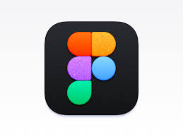

Photo editing, vector illustration, page layout, interface design and quick social graphics are five different jobs, and the tool that wins one of them is often a poor fit for another.
Updated September 20, 2026

The fastest way to a wrong purchase in this category is choosing a tool because it's popular rather than because it matches what you'll spend most of your time doing. Someone retouching product photos all day has almost nothing in common, workflow-wise, with someone laying out a fifty-page catalogue, and both of those are different again from someone designing app screens for a development team. Before comparing feature lists, it helps to name the actual recurring task: is it mostly photos, mostly shapes and type, mostly multi-page documents, mostly interface screens, or mostly quick graphics that need to go out fast?
The sections below walk through each of those four jobs and name the tools that actually compete in each one, rather than treating "graphic design software" as a single category with one winner.
The long-standing default for pixel-level photo work, and still the one most tutorials, plugins and print shops assume you're using. Layers, masks, selection tools and content-aware fill are deep and mature, and the generative fill features built into recent versions handle object removal and background extension well. The subscription model is the main friction point for occasional users, since the ongoing cost adds up if you only edit photos a few times a year.
Covers most of what a working photographer or designer actually uses in Photoshop — layers, masks, frequency separation, RAW editing — for a single upfront price instead of a subscription. The plugin and tutorial ecosystem is smaller, and a few advanced AI-driven features in Photoshop don't have a direct equivalent here yet, but for most retouching and compositing work the gap is narrower than the price difference suggests.
Capable and genuinely free, with a learning curve that's steeper mainly because menus and terminology differ from the Adobe-standard layout most tutorials assume. A reasonable choice for someone who edits photos occasionally and doesn't want an ongoing cost, less reasonable for a professional workflow that needs to hand files back and forth with clients using industry-standard formats and plugins.
The industry standard for logos, icons and any artwork that needs to scale cleanly from a business card to a billboard. Its typography and path tools are extensive, and it's the format most print vendors and brand agencies expect to receive. Like Photoshop, the ongoing subscription cost is the main downside for infrequent use.
A strong vector tool at a single purchase price, with the unusual ability to switch between vector and raster (pixel-based) workspaces inside the same document — useful when an illustration needs both crisp vector shapes and a painted or textured element. Font handling and some advanced typography tools are a step behind Illustrator, which matters more for heavy text-based branding work than for icon or illustration work.
A genuinely capable free vector editor, well suited to icons, simple logos and technical illustration. File compatibility with Illustrator's native format isn't perfect, so a complex file handed off between the two can lose some effects or text formatting in the process — worth testing on a real file before committing to it for client work.
Still widely used in sign-making, engraving and some print shops, particularly in regions and industries where it became the standard years ago and workflows never fully moved to Illustrator. Worth considering mainly if the people or vendors you already work with use it, since file compatibility with their existing setup matters more here than an abstract feature comparison.
Built specifically for multi-page documents — brochures, catalogues, magazines, books — with master pages, style sheets and precise control over text flow across many pages. Overkill for a single-page flyer, genuinely difficult to replace for anything running past ten or so pages with consistent formatting.
Covers the core of what InDesign does — master pages, style sheets, multi-page flow — at a single purchase price, and shares assets directly with Affinity Photo and Designer if you're already using those. A smaller plugin ecosystem and less depth in advanced typographic controls are the trade-offs for occasional or budget-conscious layout work.
Handles simple layouts — one or two page flyers, social templates, basic documents — through a browser with a large built-in template and stock library. It is not a real substitute for InDesign on a long, precisely formatted document, but for quick, template-driven layout work it removes far more friction than either professional tool for someone without design training.
Runs in a browser, which makes real-time collaboration — multiple people editing the same file, commenting, developers inspecting exact spacing and colors — far smoother than file-based alternatives. It has become the default for app and website interface design, and its component and auto-layout systems are built specifically around the way interface design actually gets iterated on.
Adobe's own interface-design tool, sharing some file and font handling with the rest of the Adobe apps. It has lost significant ground to Figma in team and freelance workflows over the past few years, mainly because Figma's browser-based collaboration became the expected default across the industry, so check whether your collaborators are still actively using XD before committing to it for a team project.
Not built for serious interface design, but genuinely useful for quick social graphics, presentation decks and marketing materials where speed matters more than pixel-precise control. Its enormous template library is the actual product here — most of the value is in starting from something close to finished rather than from a blank canvas.
Software marketing tends to imply a tool is either "easy" or "professional," but the honest picture is that every one of these applications has a shallow surface and a deep core, and which part you need depends on the work. Canva's shallow surface is genuinely shallow — dragging a template element and changing its text takes minutes to learn. Photoshop and Illustrator have a much longer path to real fluency, not because the software is poorly designed, but because photo compositing and precise vector control are inherently detailed crafts with a lot of underlying technique to absorb.
Figma sits in an interesting middle position: the basic act of placing and resizing shapes is quick to learn, but building a properly structured design system with reusable components and consistent auto-layout takes real practice, and a file built without that structure becomes painful to maintain as a project grows. The practical implication is that a beginner comparing "ease of use" across these tools is often really comparing how much of the software they've actually tried to use — most of these apps feel easy at the surface and get harder as the work gets more demanding.
Solo work and team work reward different tools. Working alone, a one-time-purchase app like Affinity's suite removes the ongoing cost of a subscription for capability you're the only one using, and file compatibility with collaborators matters less since there's no one else to hand files to. Working with a team changes the calculation substantially — real-time co-editing, comments tied to a specific spot on the canvas, and version history that shows who changed what become genuinely useful rather than nice-to-have, which is a big part of why Figma in particular has become the default for teams even in organizations that also license the full Adobe suite.
A mixed reality is common in practice: a team might do photo and vector production in Adobe or Affinity tools individually, then bring finished assets into Figma or Canva for the parts of the workflow that genuinely benefit from several people looking at the same file at once. Treating this as an either-or choice between ecosystems is usually less useful than matching each stage of a project to whichever tool actually helps at that stage.
| Model | How it works | Best for |
|---|---|---|
| Subscription (Adobe) | Monthly or annual fee, always the latest version, cloud storage included | Frequent, professional use where staying current with features and file compatibility matters |
| One-time purchase (Affinity) | Pay once, own that version; paid upgrades for major new versions | Regular but not daily use, or anyone who dislikes ongoing subscription costs |
| Free tier + paid plans (Figma, Canva) | Core features free, collaboration or storage limits unlock with a paid plan | Teams and casual users who want to try before committing to a paid tier |
| Free, open source (GIMP, Inkscape) | No cost, community-maintained, no vendor lock-in | Occasional use, students, or anyone avoiding recurring software costs entirely |
It's worth pricing out a full year of realistic use before comparing sticker prices, since a subscription that looks expensive monthly can be cheaper than a one-time tool if you'd otherwise need to buy several separate one-time apps to cover photo, vector and layout work individually.
A tool's built-in capability is only part of the picture — the surrounding ecosystem of plugins, stock assets and integrations often ends up mattering just as much in daily use. Adobe's apps benefit from the largest plugin ecosystem in the category, along with deep integration into Adobe Stock for images, fonts and templates, which can save real time on projects with tight deadlines. Canva's biggest asset is arguably not its editing tools at all but its enormous, constantly refreshed template and stock library, which is the actual reason many small businesses and social media managers choose it over a more "capable" tool they'd use less efficiently.
AI-assisted features — generative fill, background removal, automatic resizing for different platforms — have become common across nearly all of these tools in some form, Adobe's and Canva's included. The quality and usefulness of these features varies by tool and changes frequently as the underlying models improve, so it's worth testing the specific feature you'd actually rely on with your own real images rather than trusting a demo clip in a product announcement.
Software comparisons often skip past file compatibility, but it's frequently the deciding factor in a real working relationship. Before committing to a tool, check two things: what format you'll receive source files in from clients, printers or collaborators, and what format you'll need to deliver finished work in. A layered Photoshop file (.psd) and a native Illustrator file (.ai) are the de facto standards most print vendors and agencies expect, and while Affinity's apps can open and export these formats, complex effects and certain text formatting don't always survive the round trip perfectly.
The safest test, rather than trusting a compatibility claim on a feature page, is to take one real file you already work with and open it in the tool you're considering, checking specifically for anything that shifted, disappeared or needs manual fixing.
A common worry when considering a cheaper or free alternative is what happens to years of existing files built in a different tool. In practice, migration is smoother for some categories than others. Vector and layout files tend to survive a move reasonably well if the destination app can import the source format, though complex effects, certain font substitutions and advanced typography features are the most likely casualties. Photo-editing files with many layers, adjustment layers and smart objects tend to be more fragile across a tool switch, since the exact way each app handles non-destructive edits differs under the hood even when both claim support for the same file format.
A practical way to test this before committing to a switch: open your five most complex existing files in the new tool and check specifically for broken effects, shifted text, or missing fonts, rather than assuming a general compatibility claim covers your particular files. For an active freelance or agency workflow, it's often worth running both tools in parallel for a project or two before fully retiring the old one.
Generative and AI-assisted features have shown up across nearly all of these apps in the past couple of years, and it's worth separating genuine time-savers from novelty. Photoshop's generative fill, which can extend a background or remove an object convincingly, is one of the more practically useful additions for retouching work. Canva's AI-assisted background removal and text-to-image features speed up quick marketing work noticeably. Figma and the vector tools have added lighter AI touches — auto-naming layers, suggesting layout adjustments — that help more at the margins than at the core of the work.
None of these change the fundamental skill required to use any of these tools well. An automatically generated background still needs a trained eye to judge whether it actually fits the lighting and perspective of the rest of the image, and a template Canva suggests still needs someone who understands layout and hierarchy to pick the right one and adjust it sensibly. Treat AI features as a time-saver on top of the underlying craft, not a replacement for learning it.
Most of these tools now have companion mobile or tablet apps, and the gap between them and the desktop product varies a lot. Figma's app is mainly for reviewing and commenting on files rather than full design work, which makes sense given how fiddly precise vector editing is on a touchscreen. Canva's mobile app is close to feature-complete with its desktop version, reflecting its template-driven, less precision-dependent workflow. Adobe's mobile apps for Photoshop and Illustrator have grown more capable, particularly paired with a stylus on a tablet, but still cover a smaller slice of the desktop feature set, and professional, deadline-driven work is still generally done on a full-size screen with a mouse or tablet pen rather than a phone.
Generative and AI-assisted features have landed in nearly every tool on this page over the past couple of years, though unevenly. Photoshop's generative fill handles object removal and background extension convincingly enough that it's changed how a lot of retouching gets done day to day. Canva's AI tools lean toward quick generation — background removal, text-to-image elements, auto-resizing a design across multiple formats — aimed at speed rather than precision. Figma and the vector tools have moved more cautiously here, since precise, intentional path control is central to what vector work actually is, and a generated shape still usually needs manual cleanup to be production-ready.
Worth treating these features as a genuine time-saver for rough drafts and first passes, and with more scrutiny for final, client-facing work — a generated element can look convincing at a glance and still contain a subtle error, an odd texture seam, or a detail that doesn't hold up at full size or in print.
A colour-accurate monitor matters more than most people expect once work leaves the screen and goes to print or to a client viewing it on their own device — a monitor that runs noticeably warm or cool can make you correct colours that weren't actually wrong, only to have them look off everywhere else. A drawing tablet or a stylus-enabled screen changes illustration and retouching work meaningfully if you draw by hand rather than working entirely with a mouse, though it's a genuinely optional purchase for someone doing mostly layout or interface work with keyboard shortcuts and precise clicks.
Can one tool realistically replace all of these? The closest single answer is an Adobe subscription bundle, which covers photo, vector and layout in one ecosystem, though it doesn't cover collaborative interface design as smoothly as Figma does. Very few individual designers actually need all five categories at a professional level simultaneously.
Is Canva good enough for a small business's entire design needs? For social posts, simple flyers and presentations, often yes. For a logo meant to last years and scale to a billboard, a proper vector tool is worth the extra step, since template-based logos are rarely as distinctive or as technically clean as custom vector work.
Do free tools produce noticeably worse results than paid ones? Not inherently — the output quality depends far more on the person using the tool than the tool itself for most everyday work. The gap shows up more in workflow speed, plugin ecosystems and file compatibility with the rest of an industry than in the raw quality of a finished image.
Should I learn multiple tools or specialize in one? Depends on the work you actually do. If your job genuinely spans photo, vector and layout, learning the core concepts once and applying them across a couple of tools is realistic, since the underlying ideas — layers, paths, master pages — transfer between apps more than the specific menu locations do.
For general help weighing any purchase like this, see our buying guide, and read our methodology page for how comparisons on this site get built. Pricing and plan details change often across all of these tools, so check the current offer before subscribing or buying.